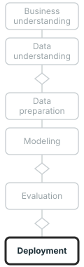

name: title layout: true class: cover --- count: false .section-mark.center[ ## Deep learning for decisions ### When a network is worth its cost, and how to borrow a trained one <br /> Oscar Esteban <<code>oscar.esteban@hevs.ch</code>> <br /> EAD · Exploration avancée de données et intelligence décisionnelle · 23.10.2026 <div style="font-size: 0.8em; margin-top: 1.2em;"><a href="https://oesteban.github.io/msba-ead-2026-2027-slides/day2/05-dl/index.html"> https://oesteban.github.io/msba-ead-2026-2027-slides/day2/05-dl/index.html </a></div> ] ??? --- name: newsection layout: true .perma-sidebar[ <p class="rotate"> <a rel="license" href="http://creativecommons.org/licenses/by/4.0/"><img alt="Creative Commons License" style="border-width:0; height: 20px; padding-top: 6px;" src="https://i.creativecommons.org/l/by/4.0/88x31.png" /></a> <span style="padding-left: 10px; font-weight: 600;">Deep learning for decisions (23.10.2026)</span> </p> ] --- class: vcenter # This deck: when a network pays off .cards.steps[ .card[ .enum[1] <span class="part">Where deep learning earns its cost.</span> Photos, texts and recordings, against tables. Slides 2 and 3. ] .card[ .enum[2] <span class="part">How a network learns.</span> Layers, a loss and gradient descent; the softmax; convolutions. Slides 4 to 6. ] .card[ .enum[3] <span class="part">Borrowing a trained network.</span> ImageNet, a new head, why a few dozen photos suffice, the ladder from zero-shot to training from scratch. Slides 7 to 10. ] .card[ .enum[4] <span class="part">Hands-on 4: lions and tigers.</span> The photo sets, a clean test set, Dataiku on two classes then three, the errors, saliency maps. Slides 11 to 17. ] .card[ .enum[5] <span class="part">Beyond a working model.</span> Rights over photos and faces, the EU AI Act; text next. Slides 18 and 19. ] ] ??? --- # Deep learning earns its cost on raw data <img class="phase-thumb" src="images/phase-mo.svg" alt="The CRISP-DM phases, modeling lit" /> .beside-thumb[ <div class="trio"> <div><b class="k">A photo</b>224 × 224 pixels in three colours: <span class="num">150,528</span> numbers, and not one of them says "tiger" on its own.</div> <div><b class="k">A text</b>A sequence of words. The language models behind week 2's RAG chatbot are deep networks, trained on text.</div> <div><b class="k">A recording</b>A stream of sound. Speech recognition was among the first fields deep learning transformed.</div> </div> .lead.big[A deep network learns its own features from the raw values, layer after layer (slide 6).] ] .footnote[Y. LeCun, Y. Bengio and G. Hinton (2015), *Nature* 521:436 to 444. 224 × 224: the input of EfficientNet B0, M. Tan and Q. Le (2019), Table 1.] ??? --- # On tables, trees still match a network <img class="phase-thumb" src="images/phase-mo.svg" alt="The CRISP-DM phases, modeling lit" /> .beside-thumb[ .lead.big[Drafted once the wiki holds its sources (Grinsztajn et al. 2022; Shwartz-Ziv and Armon 2022).] ] ??? --- class: stepwise-svg # A network learns its weights from its errors <img class="phase-thumb" src="images/phase-mo.svg" alt="The CRISP-DM phases, modeling lit" /> .beside-thumb[ <div class="step-1"><object type="image/svg+xml" data="images/network.svg" style="width: 94%; display: block; margin: 0 auto; pointer-events: none;" aria-label="A small network: pixels in, two hidden layers, three class probabilities out; the loss on a tiger called lion; gradient descent sends the correction back"></object></div> .step-3.lead[A "stack" of simple models fitted together: only the last layer is given the label. Week 1's comic drew the layers and the validation set; the loss and gradient descent are how the weights get their values.] ] .footnote[.book[<i class="fa-solid fa-book-open"></i> Provost & Fawcett (2013), pp. 106 to 108.] S. J. D. Prince (2023), chapters 3, 4, 6 and 7. Illustrative values.] ??? --- class: stepwise-svg # The last layer gives one probability per class <img class="phase-thumb" src="images/phase-mo.svg" alt="The CRISP-DM phases, modeling lit" /> .beside-thumb[ <div class="step-1"><object type="image/svg+xml" data="images/softmax.svg" style="width: 100%; display: block; margin: 0 auto; pointer-events: none;" aria-label="Three scores, 2.1, 0.4 and minus 1.0, become the probabilities 0.81, 0.15 and 0.04 through a softmax"></object></div> .step-3.lead.big[The multi-class problem of *Beyond binary classification*, again: a network ends where those models did.] ] .footnote[S. J. D. Prince (2023), section 5.5: the softmax. Illustrative scores.] ??? --- class: stepwise-svg # Convolutions build features from edges up <img class="phase-thumb" src="images/phase-mo.svg" alt="The CRISP-DM phases, modeling lit" /> .beside-thumb[ <div class="step-1"><object type="image/svg+xml" data="images/convolution.svg" style="width: 100%; display: block; margin: 0 auto; pointer-events: none;" aria-label="A three by three filter slides over the pixels and gives a feature map; stacked layers build edges, motifs, parts and the object"></object></div> .step-2.lead[Week 1's comic gave its network on faces the features by hand. A convolutional network learns them from the photos, and its first layers come out alike whatever the photos.] ] .footnote[Y. LeCun, Y. Bengio and G. Hinton (2015); J. Yosinski et al. (2014): first-layer filters; S. J. D. Prince (2023), chapter 10. Illustrative.] ??? --- # Pretrained means trained first on ImageNet <img class="phase-thumb" src="images/phase-mo.svg" alt="The CRISP-DM phases, modeling lit" /> .beside-thumb[ <div class="facts big"> <div><span class="num">1.28 million</span>labelled training photos in the 2012 challenge's set.</div> <div><span class="num">1,000</span>classes, lion and tiger among them, and several domestic cats.</div> <div><span class="num">15 million</span>labelled photos in about 22,000 categories in all of ImageNet by 2012, found by web search and kept on crowd workers' votes.</div> </div> .lead.big[A network pretrained on ImageNet has seen lions and tigers before Hands-on 4 begins.] ] .footnote[J. Deng et al. (2009); K. He et al. (2016): 1.28 million training images; A. Krizhevsky et al. (2017): 15 million; J. Yosinski et al. (2014): the felid classes.] ??? --- class: stepwise-svg # Transfer learning trains only a new head <img class="phase-thumb" src="images/phase-mo.svg" alt="The CRISP-DM phases, modeling lit" /> .beside-thumb[ <div class="step-1"><object type="image/svg+xml" data="images/new-head.svg" style="width: 100%; display: block; margin: 0 auto; pointer-events: none;" aria-label="An EfficientNet backbone trained on ImageNet; its 1,000-class output is replaced by a new lion and tiger head; the number of retrained layers is zero in Hands-on 4"></object></div> .step-3.lead[It is the fine-tuning option of week 2's RAG session, for images. In Dataiku, **Design**, *Number of retrained layers*: the more layers, the more photos it needs.] ] .footnote[S. J. D. Prince (2023), section 9.3.6; A. Zhang et al. (2023), section 14.2; Dataiku (2024), *Computer vision*, DSS 13 documentation. Schematic.] ??? --- class: stepwise-svg # A few dozen photos can be enough <img class="phase-thumb" src="images/phase-mo.svg" alt="The CRISP-DM phases, modeling lit" /> .beside-thumb[ <div class="duo step-1"> <div><b class="k">General features transfer</b>A network's first layers transfer almost perfectly. With 47 to 800 photos in all, a simple model on frozen features matched or beat full fine-tuning.</div> <div><b class="k">Lions and tigers are easy</b>Both are ImageNet classes, so the borrowed features have seen them. Car models and aircraft gained far less.</div> </div> <div class="step-2"><object type="image/svg+xml" data="images/augment.svg" style="width: 92%; display: block; margin: 0.6em auto 0; pointer-events: none;" aria-label="One training image flipped, cropped and recoloured, with the same label"></object></div> .step-3.lead[Augmentation adds variety, not photos: it cannot fix a wrong label or a photo copied into the test set.] ] .footnote[J. Yosinski et al. (2014); S. Kornblith, J. Shlens and Q. Le (2019); A. Krizhevsky et al. (2017); Dataiku (2024), *Computer vision*: augmentation, minimum kept ratio 0.75. Illustrative image.] ??? --- # Climb the ladder only as far as the problem needs <img class="phase-thumb" src="images/phase-mo.svg" alt="The CRISP-DM phases, modeling lit" /> .beside-thumb[ .lead.big[Drafted once the wiki holds its sources (Radford et al. 2021).] ] ??? --- .section-mark[ # Hands-on 4: lions and tigers ] ??? --- # The data: what the photo sets hold <img class="phase-thumb" src="images/phase-du.svg" alt="The CRISP-DM phases, data understanding lit" /> .beside-thumb.terms[ <table> <tr><th>file</th><th>folder</th><th class="tgt">label, from the file name</th></tr> <tr><td><code>lion_001.jpg</code></td><td>training</td><td class="tgt">lion</td></tr> <tr><td><code>tiger_001.jpg</code></td><td>training</td><td class="tgt">tiger</td></tr> <tr><td><code>lion_002.jpg</code></td><td>training</td><td class="tgt">lion</td></tr> <tr><td><code>tiger_001.jpg</code></td><td>test</td><td class="tgt">tiger</td></tr> <tr><td><code>lion_001.jpg</code></td><td>test</td><td class="tgt">lion</td></tr> </table> <div class="legend"> <div><b>A row</b>: one photo, a file in a folder.</div> <div><b>A column</b>: the photo's pixels, which the network reads; no other column.</div> <div><b>The target</b>: the label, the word before the underscore.</div> </div> <div class="facts"> <div><span class="num">58</span>training photos: 30 lions, 28 tigers.</div> <div><span class="num">57</span>test photos: 38 lions, 19 tigers.</div> <div><span class="num">67%</span>right by always saying lion on the test photos; one photo is 1.75 points.</div> </div> ] .footnote[File names of the course archives. The photos were taken from the web and their licences are unknown: none is shown in this deck.] ??? --- class: stepwise-svg # Clean the test set: no copies, no wrong labels <img class="phase-thumb" src="images/phase-dp.svg" alt="The CRISP-DM phases, data preparation lit" /> .beside-thumb[ <div class="metric2"> <div class="alert"><span class="num">8 of 65</span>inherited test photos were copies of training photos: removed.</div> <div><span class="num">2</span>photos carried the other animal's label: corrected.</div> </div> <div class="step-1"><object type="image/svg+xml" data="images/hygiene.svg" style="width: 88%; display: block; margin: 0.6em auto 0; pointer-events: none;" aria-label="A test photo that is also a training photo, and a photo labelled lion that shows a tiger"></object></div> .step-3.lead[On 57 test photos, an observed 89% could be anything from 78% to 96%: a perfect score on a dozen photos proves little.] ] .footnote[Counted on the course copy. B. Recht et al. (2019): copies of training images score 99 to 100%. 78% to 96%: a 95% interval for 51 of 57.] ??? --- # Hands-on 4: tell a lion from a tiger <img class="phase-thumb" src="images/phase-du-mo.svg" alt="The CRISP-DM phases, data understanding to modeling lit" /> .beside-thumb[ .need[**The need.** Sort photos into two classes from a few dozen labelled examples, as a firm would with its own photos of products or defects: can 58 photos teach a borrowed network to tell a lion from a tiger?] <div class="moves"> <div><b>1. Load</b>The 58 photos into a folder; the label from each file name.<br /><code>+ Dataset → Folder</code>, <code>+ Recipe → List Contents</code>, <i>Extract with regular expression</i></div> <div><b>2. Train</b>Target <code>label</code>; EfficientNet B0, 0 retrained layers.<br /><code>Lab → Image classification</code>, <code>Design</code></div> <div><b>3. Score</b>The 57 test photos, which the model has never seen.<br /><code>+ Recipe → Score</code></div> <div><b>4. Look</b>The confusion matrix, and the photos it got wrong.<br /><code>Results</code>, the image feed</div> </div> .time[Sheet *Hands-on 4*, panels 1 to 3. Groups of three. 20 minutes.] ] .footnote[Steps as on the sheet; Dataiku (2024), *Computer vision*. The pattern <code>([a-z]+)_[0-9]+</code> keeps the word before the underscore.] ??? --- # Hands-on 4, continued: three classes, uneven <img class="phase-thumb" src="images/phase-du-mo.svg" alt="The CRISP-DM phases, data understanding to modeling lit" /> .beside-thumb[ <div class="moves"> <div><b>5. Add</b>120 cat photos to the training folder, 80 to the test folder.<br /><code>Folder → Upload</code></div> <div><b>6. Retrain</b>Same settings, now three classes: 30 lions, 28 tigers, 120 cats.<br /><code>Lab → Image classification</code></div> <div><b>7. Read</b>Recall per class; the macro against the weighted average.<br /><code>Results → Metrics</code></div> <div><b>8. Decide</b>Which score would you report, and why?<br />On the sheet, panel 5</div> </div> .admonition.question.near[ <i class="fa-solid fa-circle-question"></i> The cats outnumber the lions four to one in training. **Which average says how well each animal is recognised?** ] .time[Sheet panels 4 and 5. 10 minutes.] ] .footnote[Cats: Natural Images, A. Roy et al. (2018), the cat class cut to 120 training and 80 test photos. Averages: *Beyond binary classification*, slide 6.] ??? --- # The errors are worth looking at, one by one <img class="phase-thumb" src="images/phase-ev.svg" alt="The CRISP-DM phases, evaluation lit" /> .beside-thumb[ <div class="duo big"> <div><b class="k">Where to look</b>In Dataiku's results, the confusion matrix: click a cell, and the image feed shows its photos, each with its class probabilities.</div> <div><b class="k">What to ask of each</b>Is its label right? Is the animal visible, alone, the main subject? Benchmarks carry wrong labels too: about 3.3% of test labels across ten of them, about 6% on ImageNet's validation set.</div> </div> .lead.big[With 57 test photos, one error is 1.75 points: read the photos before the percentage.] ] .footnote[Dataiku (2024), *Computer vision*, DSS 13 documentation: results. C. Northcutt, A. Athalye and J. Mueller (2021).] ??? --- # Saliency maps show where a model looked <img class="phase-thumb" src="images/phase-ev.svg" alt="The CRISP-DM phases, evaluation lit" /> .beside-thumb[ .lead.big[Drafted once the wiki holds its sources (Simonyan et al. 2014; Adebayo et al. 2018).] ] ??? --- # The law reaches photos and faces <p></p> .beside-thumb[ .lead.big[Drafted once the wiki holds its sources (Regulation (EU) 2024/1689).] ] ??? --- # Text gets the same treatment <img class="phase-thumb" src="images/phase-mo.svg" alt="The CRISP-DM phases, modeling lit" /> .beside-thumb[ <div class="duo big"> <div><b class="k">Learned representations</b>The embeddings of week 2's RAG workshop are short, dense vectors learned by networks from text, as this deck's features were learned from photos.</div> <div><b class="k">Borrowed, then adapted</b>A language model trained first on a large body of text, then given a new output layer for a task, is transfer learning again.</div> </div> .lead.big[After the break, the question of slide 2 for text: which features can a classifier read from words?] ] .footnote[D. Jurafsky and J. H. Martin (2026 draft), chapters 5 and 9; J. Devlin et al. (2019).] ??? --- # References .refs[ - Deng, J., Dong, W., Socher, R., Li, L.-J., Li, K. and Fei-Fei, L. (2009). ImageNet: a large-scale hierarchical image database. *2009 IEEE Conference on Computer Vision and Pattern Recognition*, 248 to 255. doi:10.1109/cvpr.2009.5206848. - Dataiku (2024). *Computer vision*, Dataiku DSS 13 reference documentation. - Devlin, J., Chang, M.-W., Lee, K. and Toutanova, K. (2019). BERT: pre-training of deep bidirectional transformers for language understanding. *Proceedings of NAACL-HLT 2019*, 4171 to 4186. - He, K., Zhang, X., Ren, S. and Sun, J. (2016). Deep residual learning for image recognition. *2016 IEEE Conference on Computer Vision and Pattern Recognition*, 770 to 778. doi:10.1109/cvpr.2016.90. - Jurafsky, D. and Martin, J. H. (2026). *Speech and Language Processing*, 3rd ed., draft. - Kornblith, S., Shlens, J. and Le, Q. V. (2019). Do better ImageNet models transfer better? *2019 IEEE/CVF Conference on Computer Vision and Pattern Recognition*, 2656 to 2666. doi:10.1109/cvpr.2019.00277. - Krizhevsky, A., Sutskever, I. and Hinton, G. E. (2017). ImageNet classification with deep convolutional neural networks. *Communications of the ACM* 60(6):84 to 90. doi:10.1145/3065386. - LeCun, Y., Bengio, Y. and Hinton, G. (2015). Deep learning. *Nature* 521(7553):436 to 444. doi:10.1038/nature14539. - Northcutt, C. G., Athalye, A. and Mueller, J. (2021). Pervasive label errors in test sets destabilize machine learning benchmarks. *Proceedings of the Neural Information Processing Systems Track on Datasets and Benchmarks* 1. - Prince, S. J. D. (2023). *Understanding Deep Learning*. MIT Press. - Provost, F. and Fawcett, T. (2013). *Data Science for Business*. O'Reilly. - Recht, B., Roelofs, R., Schmidt, L. and Shankar, V. (2019). Do ImageNet classifiers generalize to ImageNet? *Proceedings of the 36th International Conference on Machine Learning*, PMLR 97:5389 to 5400. - Roy, P., Ghosh, S., Bhattacharya, S. and Pal, U. (2018). Effects of degradations on deep neural network architectures. arXiv:1807.10108. - Tan, M. and Le, Q. V. (2019). EfficientNet: rethinking model scaling for convolutional neural networks. *Proceedings of the 36th International Conference on Machine Learning*, PMLR 97:6105 to 6114. - Yosinski, J., Clune, J., Bengio, Y. and Lipson, H. (2014). How transferable are features in deep neural networks? *Advances in Neural Information Processing Systems* 27, 3320 to 3328. - Zhang, A., Lipton, Z. C., Li, M. and Smola, A. J. (2023). *Dive into Deep Learning*. Cambridge University Press. ] ??? --- .section-mark[ # End .large[ Next: 23.10.2026 @ 10h30 (in <span class="timer" data-until="2026-10-23T10:30:00+02:00"></span>) [<i class="fa-solid fa-circle-left"></i>](../../day1/04-multiclass/index.html) [<i class="fa-solid fa-home"></i>](#1) <i class="fa-solid fa-circle-right" style="opacity: 20%"></i> ] ] ???